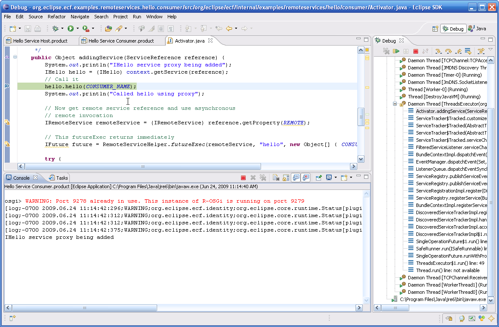

an eclipse runtime project
New and Noteworthy
3.0.0 Release
Return to ECF download page
New and Noteworthy for 2.0.0
New and Noteworthy for 2.1.0

|
eclipse communication framework
an eclipse runtime project New and Noteworthy 3.0.0 Release Return to ECF download page New and Noteworthy for 2.0.0 New and Noteworthy for 2.1.0 |
|
|
Distributed OSGi |
ECF 3.0 has support for a draft version a new Distributed OSGi standard. The OSGi Enterprise Experts group has created a DRAFT specification known as RFC119, and ECF 3.0 has implemented the latest available draft. Note that RFC119 will change before OSGi 4.2 final release, and this implies subsequent API changes for ECF's implementation to remain compatible with the final version of the specification. Here is a screenshot of debugging into the consumer of a simple 'hello' remote service  Usage of this example remote service is described on Getting Started with ECF's RFC119 Implementation, as well as access to the source code. Also available is an architecture diagram showing the relationship between various ECF components in Distributed OSGi Services with ECF. Other features of the ECF implementation of RFC 119:
See also an example implementation of the OSGi EventAdmin service using ECF's shared object API, ActiveMQ (and other messaging providers), and efficient and scalable publish/subscribe messaging. |
|
Discovery API |
In addition to supporting the distributed OSGi implementation described above, a number of feature additions and were made to the ECF Discovery API. For technical details, see Distributed OSGi - The ECF Way. The ECF service discovery view was overhauled to present more information about discovered network services, and to be much more extensible
|
|
Twitter Client |
Community-initiated work is underway on a Twitter client (called TweetHub) that uses ECF APIs, as well as Eclipse RCP user interface technologies. For details of this work, and to participate, see here. Here is a screen shot from a recent version of the TweetHub work
|
|
User Search API |
A user-search API was introduced to the ECF Presence API to allow for user searches
|
|
Extending Real-Time Shared Editing to Projects |
An implementation of real-time synchronization of resources using the Eclipse Team API was done. This allows the use of the Eclipse Team API to synchronize workspace resources in real-time using instant messaging protocols (like XMPP, others). See here for more description of the functionality, and here for a screencast. |
|
Generalizing Real-time Shared Editing |
As part of ECF 2.0, we introduced an Eclipse application called Docshare. See also this video, showing the usage of Docshare in a pair-programming context. For ECF 3.0, the approach used to perform real-time conflict detection and synchronization (Operational Transformation), was abstracted away from the DocShare user interface, so that other applications can/could be created that took advantage of the underlying synchronization. This generalization is represented by bug 234142. To address this issue, we have created the ECF Sync API for (synchronization). This API is exposed as an OSGi service, and allows applications to use the operational transformation algorithm in their own applications. DocShare also has been back ported to use the ECF Sync API rather than have it's own OT implementation. |
|
Future: Google Wave Provider for ECF |
ECF has started work on supporting the Google Wave server-to-server protocol. ECF already has an XMPP provider implementation, as well as the sync API (using Operational Transformation) described above. As Google Wave was just announced, and the protocol is not yet completely specified we have not completed this work, but anticipate it going quickly once the protocol is solidified. See this enhancement request to participate in this work or track it as it proceeds. |